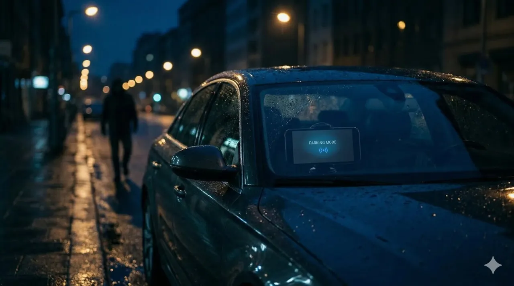

Best Free Dash Cam App for Android Phone 2026: Turn Your Smartphone into a Dashcam
Disclosure: DriveSight is our app. This comparison reflects our honest assessment.
Methodology: We evaluated these apps by installing each on an Android 14 phone and using them daily over several weeks. Scoring criteria: recording reliability, background operation stability, crash detection accuracy, and whether advertised free features are genuinely free or locked behind a paywall.
DriveSight is the best free dash cam app for Android phone in 2026. It turns any Android 8.0+ phone into a full dashcam with loop recording, crash detection, parking mode, Google Drive backup, and AI object detection — no hardware, no account, no subscription required. Free on Google Play.
Your Android phone already has a better camera than most dedicated dashcams. The sensor is sharper, the software gets updates, and it fits in your pocket when you get out of the car. All you need is the right app, a windshield mount, and a car charger — and your phone becomes a driving recorder that handles everything a $200 hardware unit does, plus a lot that it does not.
This guide covers why a phone dashcam app outperforms dedicated hardware for most drivers, what features actually matter, and which free Android dash cam apps are worth installing in 2026.

DriveSight running on an Android phone — speed camera alert triggered ahead
Why Use Your Android Phone as a Dashcam?
Dedicated dashcams do one thing. Your phone does everything — and the camera hardware in a modern Android phone is already superior to the sensors in most dashcams at the same price point. Here is the practical case for going software over hardware:
- No extra purchase — You already own the phone. A mount and charger cost under $20 total.
- Better video quality — Flagship and mid-range Android phones shoot 1080p or 4K with optical image stabilization. Most dedicated dashcams under $150 do not.
- Features that hardware cannot match — AI object detection, live streaming, cloud backup over your existing Google Drive, and 336,000+ speed camera alerts are software features no standalone dashcam offers.
- No installation — Clip the mount to your windshield, plug in the charger, open the app. Done in 90 seconds. No hardwire kit, no professional installation, no fuse box.
- Works in any vehicle — Move your phone to a rental car, a borrowed truck, or your partner's car in seconds. A hardwired dashcam stays in one vehicle forever.
- Updates make it smarter — A dashcam you buy today has the firmware it ships with. A phone dashcam app gets new features continuously.
Your phone is already a dashcam
DriveSight is free to download with no account required. Mount your phone, open the app, and it starts recording. Crash detection and cloud backup work automatically.
Download DriveSight FreeWhat to Look for in a Free Dash Cam App
Not every dashcam app on the Play Store is worth your time. Many are basic screen recorders that stamp a timestamp on video and call it a dashcam. A genuinely useful free dashcam app needs all of the following:
Loop Recording
Continuous recording that automatically overwrites old footage when storage fills up. You should never manually delete files.
Crash Detection
Uses the accelerometer to detect sudden impacts and lock that clip so it is never overwritten. The most important feature for insurance claims.
Parking Mode
Records with the screen off when parked. Motion-triggered so it saves battery. Essential for monitoring your car when you are not in it.
Background Operation
Recording must continue when you switch apps or lock the screen. Apps that pause recording when minimized are useless as dashcams.
Cloud Backup
Critical footage should survive even if the phone is stolen or destroyed. Cloud backup — without a separate monthly fee — is a major differentiator.
GPS Logging
Embeds speed and location into trip records. Useful for documenting your speed at the moment of an incident and for mileage tracking.
Top Free Dash Cam Apps for Android in 2026
DriveSight
The most complete free dashcam app on Android. DriveSight covers every essential feature in the free tier — loop recording with automatic storage management, crash and impact detection with instant clip locking, parking mode with motion detection (screen-off), Google Drive cloud backup, dual camera recording, GPS speedometer, and full trip history with route maps.
The optional Pro upgrade ($6.99/month or $29.99/year) adds real-time AI object detection powered by on-device YOLOv8 and a database of 336,000+ speed cameras, red light cameras, Flock Safety ALPR cameras, and police speed traps. No other free dashcam app offers on-device AI detection at any tier.
Best for: Drivers who want a complete dashcam replacement with cloud backup, parking surveillance, and optional AI features.
DailyRoads Voyager
A long-running free dashcam app with reliable loop recording and GPS track logging. Records in the background, supports configurable segment lengths, and includes basic incident detection. The interface is utilitarian but functional. No cloud backup, no camera alerts, and no AI features — but it records consistently and manages storage well.
Best for: Drivers who want a simple, proven recorder with no extras.
Open Camera
An open-source camera app with extensive manual controls that some drivers use as a dashcam. Supports GPS stamping, configurable video quality, and timer-based recording. Not purpose-built for dashcam use — there is no crash detection, no parking mode, and no loop recording with automatic overwrite. Requires manual file management.
Best for: Technical users who want raw control over camera settings and do not need automatic file management.
Alfred Camera
A security camera app that repurposes old phones as wireless cameras. Supports live streaming and motion detection, with free cloud video clips. Not designed for driving — no loop recording, no crash detection, no GPS speedometer. Works as a parking camera if you keep a spare phone in your car, but lacks the driving-specific features of a purpose-built dashcam app.
Best for: Parking surveillance only, using a spare phone as a stationary camera.
How to Set Up Your Android Phone as a Dashcam
Getting your phone running as a dashcam takes less than five minutes. Here is the full process:
Mount the phone
Install a windshield or dashboard mount with a secure grip. Position the phone high on the windshield, near the rearview mirror, to capture the full road view without blocking your sightline. The camera should point straight ahead, not angled down at the hood.
Connect a car charger
Plug the phone into a car USB charger rated at least 18W for phones that support fast charging. Continuous recording uses power — you need to run it plugged in. A good mount positions the phone close enough to the USB port that the cable stays tidy and does not obstruct the gear selector or vents.
Install and configure the app
Download DriveSight from Google Play. On first launch, grant camera, microphone, storage, and location permissions. Set your video resolution (1080p is the best balance of quality and storage), configure loop recording segment length (3–5 minutes works well), and set your storage limit to leave headroom for the OS.
Enable crash detection and cloud backup
Turn on crash/impact detection in settings — this uses your phone's accelerometer to automatically lock clips when a sudden impact is detected. Connect your Google Drive account for automatic cloud backup of protected clips. These two features together ensure critical footage is preserved even if something happens to the phone.
Start recording
Press record and drive. The app manages everything else automatically. When you park and want to use parking mode, tap the parking mode button before you lock the phone — the screen will dim and the app will watch for motion in the background.

Parking mode with motion detection — screen off, recording only when motion is detected
DriveSight vs Dedicated Hardware: The Honest Breakdown
| Feature | DriveSight App (Free) | $150–$300 Hardware Dashcam |
|---|---|---|
| Video quality | 1080p–4K (phone sensor) | 1080p–2K (dedicated sensor) |
| Loop recording | Yes | Yes |
| Crash detection | Yes | Yes |
| Parking mode | Yes (motion detection) | Requires hardwire kit (+$40) |
| Cloud backup | Free (Google Drive) | Subscription required (~$10/mo) |
| AI object detection | Yes (Pro) | No |
| Speed camera alerts | 336,000+ cameras (Pro) | No |
| GPS speedometer | Yes (free) | Higher-end models only |
| Remote live view | Yes, any browser (free) | Subscription required |
| Works in any car | Yes — phone goes with you | Hardwired to one vehicle |
| Heat tolerance | Moderate (phone may overheat) | Built for cabin temperatures |
| Total cost | $0 free / $29.99/yr Pro | $150–$300 + installation |
Hardware dashcams have two genuine advantages: they handle extreme cabin heat better than most phones, and they are always in the car without you having to remember to mount them. For everything else, a phone dashcam app with good software wins outright or ties.
Advanced Features: What Free Dashcam Apps Can Do Beyond Recording
AI Object Detection
DriveSight Pro runs YOLOv8 on-device using TensorFlow Lite, drawing real-time bounding boxes around vehicles, pedestrians, cyclists, and animals in the camera feed. This runs entirely offline with no cloud processing — detection latency is under 150ms on mid-range Android hardware. No dedicated dashcam at any price offers this class of computer vision locally.

On-device AI detection identifying vehicles in real time
Speed Camera and Police Alerts
The Pro tier includes a database of 336,000+ camera locations — fixed speed cameras, red light cameras, Flock Safety ALPR (Automated License Plate Reader) cameras used by law enforcement, and community-verified police speed traps. Alerts trigger on-screen and with audio as you approach. The camera map shows every known location in your area so you can plan routes with full awareness of local enforcement.

Camera and police alert map covering 336,000+ locations
Remote Live Viewer
The remote viewer lets you watch your dashcam's live feed from any browser using WebRTC peer-to-peer streaming — no relay server, no subscription. Check on a parked car from your desk or let a family member watch a road trip in real time. The viewer URL is available directly from the app.
Dual Camera Recording
Record from the front-facing and rear cameras simultaneously. The front camera captures the road ahead while the interior-facing camera records the cabin. Useful for rideshare and delivery drivers who need documentation of both the road and the interior.
Frequently Asked Questions
Can I use my Android phone as a dashcam for free?
Yes. DriveSight is free with no account required. The free tier includes loop recording, crash detection, parking mode, GPS speedometer, trip history, and Google Drive cloud backup. You can use it as a full dashcam indefinitely without paying anything.
What is the best free dash cam app for Android phone in 2026?
DriveSight offers the most complete free tier. It handles loop recording, parking mode, crash detection, cloud backup, dual camera support, and GPS tracking — all free, with no artificial recording time limits or video quality restrictions. The Pro upgrade adds AI detection and camera alerts.
Does a dashcam app drain my phone battery?
During driving, plug the phone into a car charger and battery is not a concern. In parking mode, DriveSight turns off the screen and only records on motion detection, keeping power consumption low. A healthy phone battery handles several hours of parking mode unassisted — a USB power bank or car charger keeps it going indefinitely.
Do free dashcam apps work without internet?
Yes. DriveSight works fully offline for recording, crash detection, parking mode, GPS speedometer, and trip logging. Internet is only needed for optional cloud backup and remote viewing. Cloud backup syncs automatically over WiFi, so cellular data is not required.
How much storage does a free dashcam app use?
At 1080p, DriveSight uses roughly 1.5–2 GB per hour. You set a storage cap and the app overwrites the oldest clips automatically when it fills up. Crash-detected and manually saved clips are protected. A 32 GB phone keeps several hours of rolling footage at any time.
Can any Android phone run a dashcam app?
Most Android phones running Android 8.0 (Oreo) or later can run DriveSight. Performance scales with your phone's camera and processor — a three-year-old mid-range phone handles 1080p loop recording without any issues. Older budget phones may struggle with the Pro AI features, but the free recording features run on nearly anything.
Free vs paid recording apps: is it worth upgrading?
For most drivers, free is enough. DriveSight's free tier covers loop recording, parking mode, crash detection, cloud backup, GPS speedometer, and trip history — there's no artificial cap or time limit. The paid Pro tier ($6.99/month or $29.99/year) adds 336,000+ camera and police alerts, AI object detection, dual camera recording, and no ads. In the free vs paid recording apps comparison, the upgrade makes sense if you want camera alerts or AI detection. If you just need a reliable dashcam, free covers it completely.
Start recording in 60 seconds
DriveSight is free to download with no account needed. Full recording, parking mode, crash detection, cloud backup, and GPS speedometer — all in the free tier. Install it now and your phone is a dashcam before you leave the driveway.
Download DriveSight Free